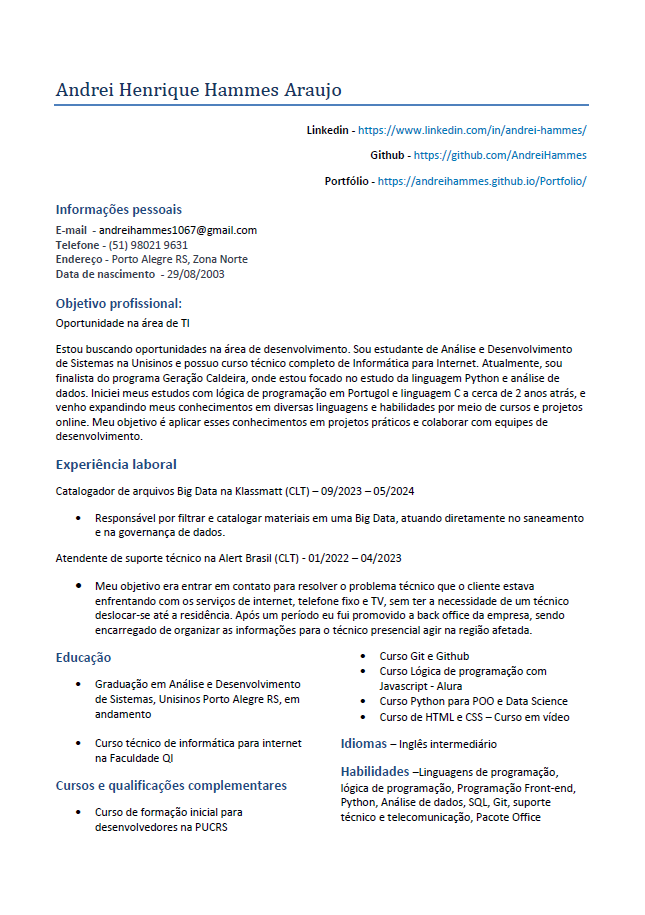

Olá, me chamo Andrei Hammes
Desenvolvedor em formação
Como estudante de Análise e Desenvolvimento de Sistemas na Unisinos, estou construindo minha carreira como desenvolvedor através de experiências práticas, estudos e um forte contato com a comunidade. Atualmente, atuo como assistente na área de projetos, trabalhando ativamente com Python, SQL, construção de APIs, automações e análise de dados. Em 2024, ser finalista do programa Geração Caldeira foi um marco importante. Além de aprofundar conhecimentos técnicos em Python e análise de dados, a experiência me proporcionou contato com um ambiente real de desenvolvimento e a dinâmica de trabalho em equipe. No futuro, almejo contribuir com comunidades que promovem educação gratuita e de qualidade, usando a tecnologia para impactar positivamente a vida das pessoas, assim como fui impactado, retribuindo o impacto positivo que projetos sociais tiveram na minha formação. Admiro profundamente o senso de comunidade e colaboração do ecossistema de tecnologia.
Confira minha jornada no geração caldeiraSkills
- Python
- Análise de dados
- SQL
- Inteligência Artificial
- HTML
- CSS
- Javascript
- Linux
- Versionamento de código com Git
- Inglês
Currículo
Você pode baixar meu currículo clicando na miniatura abaixo 👀

Educação
- Graduando em análise e desenvolvimento de sistemas - Unisinos
- Curso técnico de informática para internet completo - QI Faculdade e escola técnica
- Curso de desenvolvimento Python - Senac Tech RS
Experiências
- Assistente de projetos - Kodex Express | 09/2025 - Atualmente
Desenvolvimento Python: Criação de automações e ferramentas focadas em otimização de processos, aplicando padrões de projeto, ambientes virtuais e gestão rigorosa de dependências.
Integração de Sistemas: Implementação e consumo de APIs para automação de fluxos de dados ponta a ponta e sincronização de serviços.
Inteligência de Dados: Elaboração de queries em MySQL para extração, tratamento e análise de grandes volumes de dados.
Ciclo de Vida e Colaboração: Gestão de repositórios com Git, atuando desde o levantamento de requisitos até a documentação técnica e manutenção.
- Estagiário de Inovação - Paim United Creators | 12/2024 - 06/2025
Auxiliar no desenvolvimento e manutenção de pequenos projetos de inteligência artificial, focando em soluções simples para automatizar e otimizar processos internos.
Participação em workshops e treinamentos sobre as últimas tendências em tecnologias de IA, análise de dados e ferramentas de BI, contribuindo para a cultura de inovação da empresa, sugerindo novas tecnologias ou abordagens que possam beneficiar a organização. Colaboração com equipes multidisciplinares para entender os requisitos do negócio e desenvolver soluções inovadoras.
- Catalogador de idiomas - Klassmatt | 09/2023 - 04/2024
Responsável por filtrar e catalogar materiais em uma Big Data, atuando diretamente no saneamento e na governança de dados.
- Suporte técnico e Back Office - Alert Brasil | 01/2002 - 04/2024
Meu objetivo era entrar em contato para resolver o problema técnico que o cliente estava enfrentando com os serviços de internet, telefone fixo e TV, sem ter a necessidade de um técnico se deslocar até a residência. Após um período eu fui promovido a back office, sendo encarregado de organizar as informações para o téncnico presencial agir na região afetada.
Contato
Telefone: +55 (51) 98021-9631
E-mail: Me mande um email
LinkedIn: Visite meu LinkedIn
Github: Meu Github